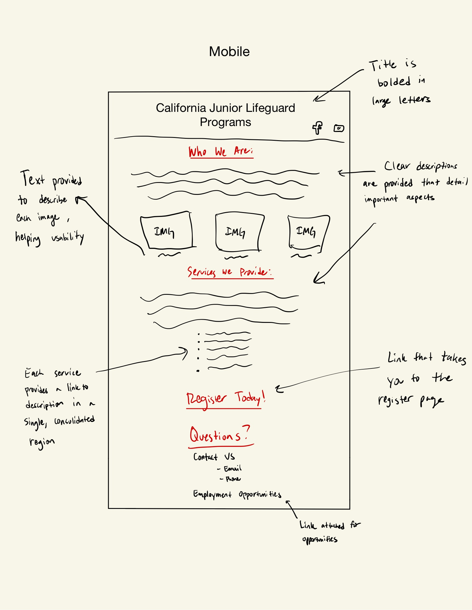
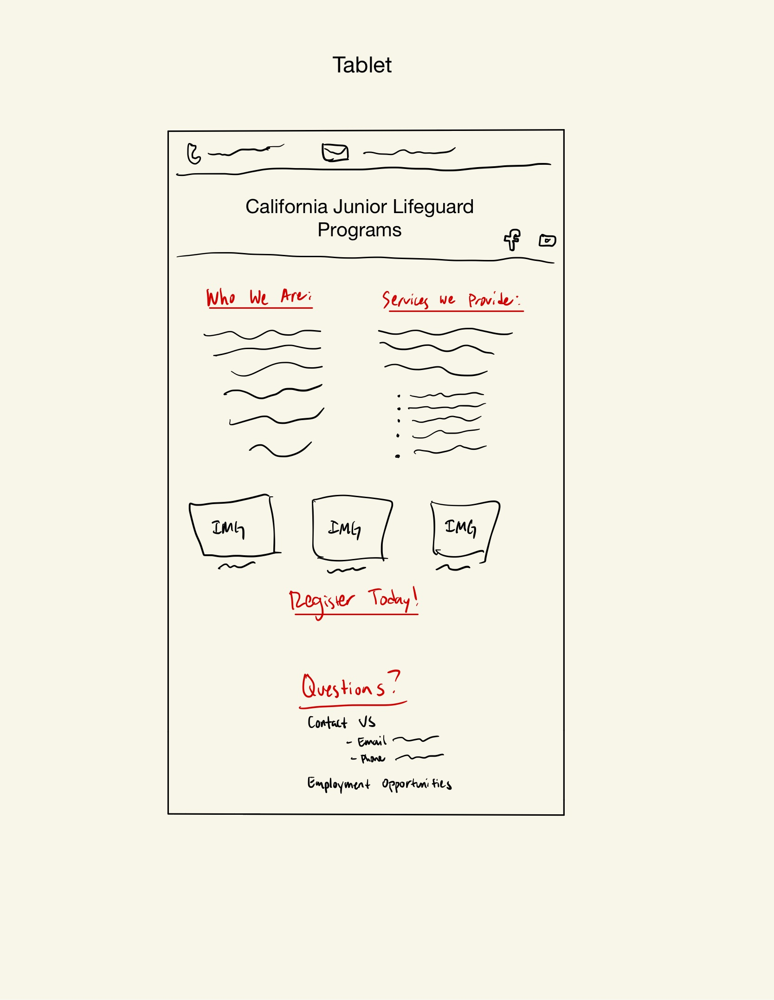
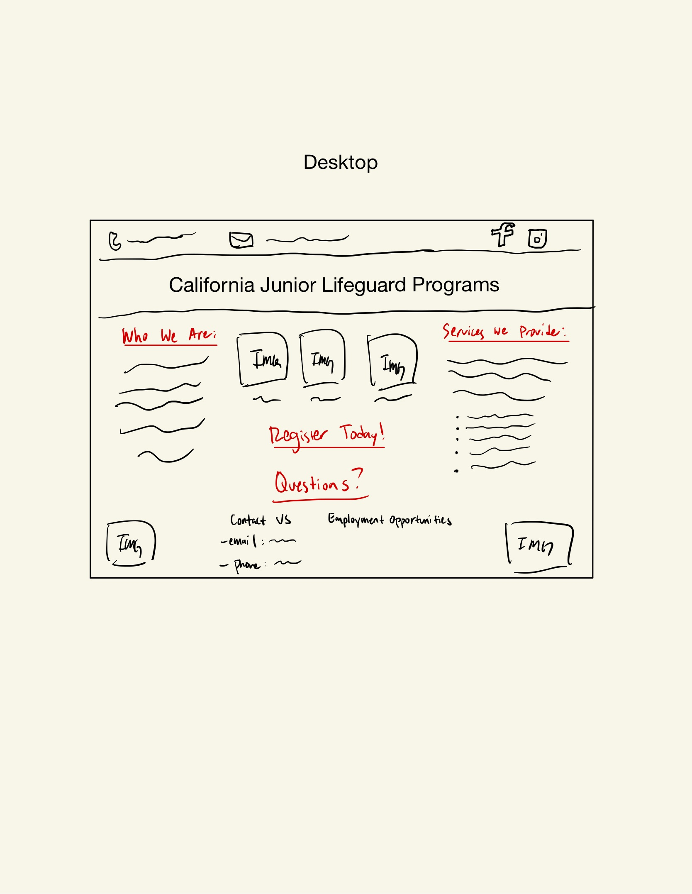
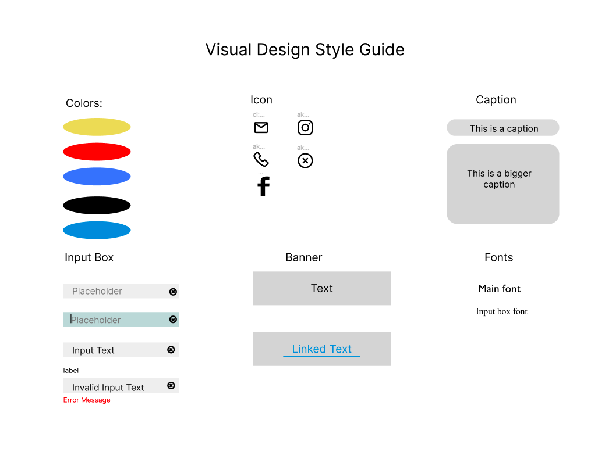
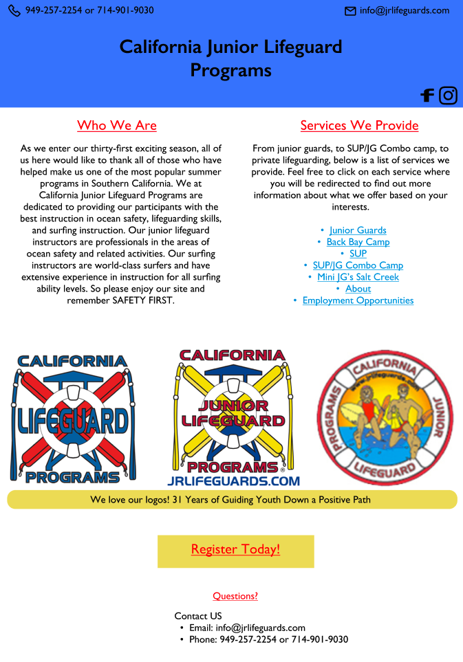
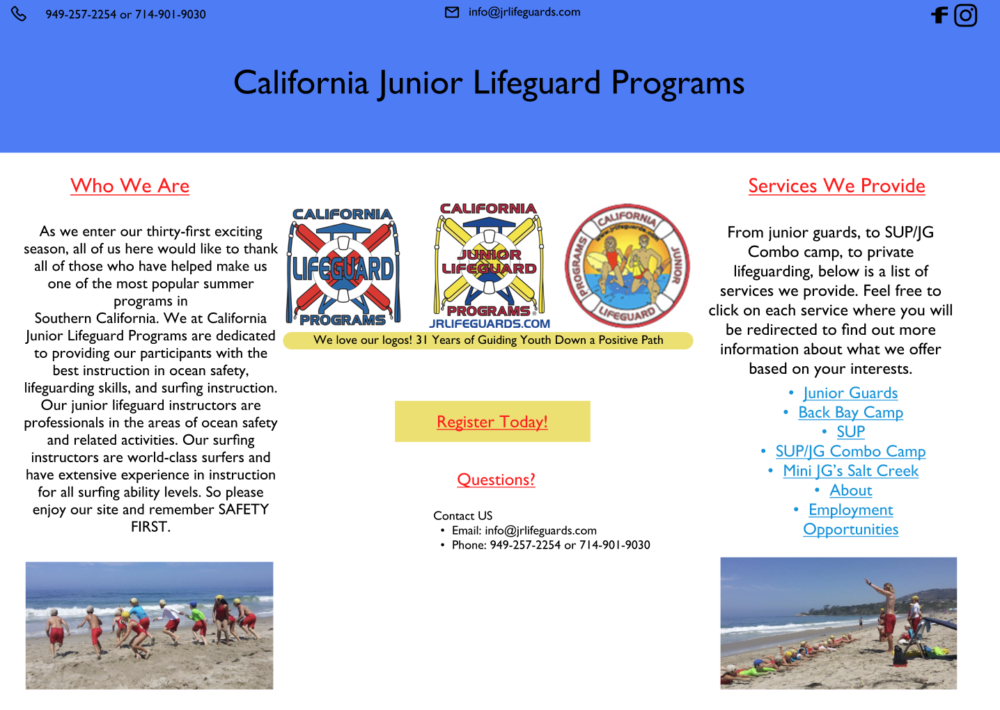

Responsive Redesign Project
Overview
The purpose of this assignment is to take a poorly designed webpage or interface and redesign it using the skills we have learned so far. We will create low-fidelity as well as high-fidelity prototypes and build a responsive website based on these prototypes.
The Webpage I Chose
I decided to choose the website of the company that I worked for over the summer: California Junior Liferguard Programs, known as CAJG. I believe that this webpage could use some updating to improve user navigation and to look more aesthetically pleasing. Below is a screenshot of the front page of the CAJG website.
 Here is the webpage
Here is the webpage
Finding Problems
- Webpage is inefficient; it uses many labels and is unorganized which makes it hard for the user to quickly find what they want
- It is confusing to try and register for the program; there is a lot of information that makes it unclear as to what it is people have to do to register
- The different tabs are unclear as to what they mean, making the memorability less effective for the site
- The learnability of the webpage is difficult, it takes a while to explore everything that this company has to offer given the layout
Accessibility
After using WebAIM WAVE to evaluate accessibility issues, I can agree with the issues regarding color contrasts within the webpage. If there were someone who finds it hard to differentiate between colors, this webpage would be hard to use for them. I also think that there needs to be alternative text for the images on the webpage, which was pointed out by WAVE. Overall, the lack of labels present was the largest issue in regards to accessibility.
Low-Fidelity Wireframes
  Visual Design Style Guide
High-Fidelity Prototype
 Here are the high-idenlity prototypes for the mobile, tablet, and desktop version of the website (respectively). In terms of annotations, the mobile and tablet are very similar in terms of user-action. They are click based and so the links will be simply be clicked on which will then move you to a different page. For the desktop version, there will be a hover indication, in that the link will underline when you hover your mouse over it. As you can see, the structure of the website changes slightly as you go from mobile, to tablet, to desktop.
Link to Redesigned Website
Click the link below to view my redesigned site.
Redesigned Site